PDM插件和任务
通过管理工具中的任务特征，可配置、运行和监控常用的Enterpise PDM 文件操作任务。这些任务由通过 Enterprise PDM API创建的插件定义
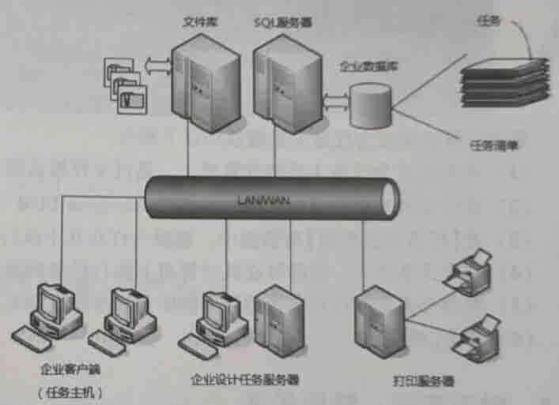
SWTaskAddin
1添加插件&任务
1、通过使用插件，您可以更好地配置 PDM
2、新插件：加载.dll 文件
3、调试插件：您无需将插件添加到库也可调试该插件。调试时，插件将从编译程序将之注册的地方加载。其他用户不会受到插件的影响。
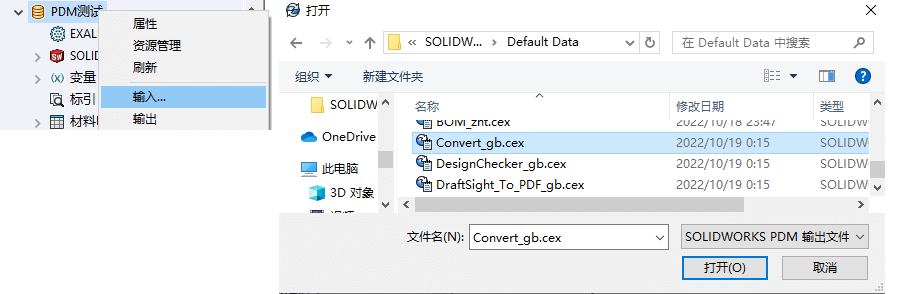
2配置任务主机
通常，整个操作都需要标准权限或仅需要管理员登录名。并且需要有电脑设置成【任务主机配置】这样，该电脑就能进行插件任务的运行。在“ 插件”上设置一个选中标记（这需要提升的权限或管理员权限）
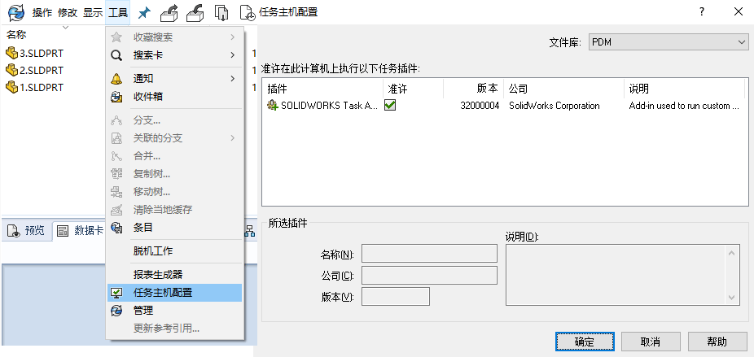
接下来打开管理员面板，右键单击该任务，然后按“打开”。转到“执行方法”，然后在您的计算机名称上打勾。完成
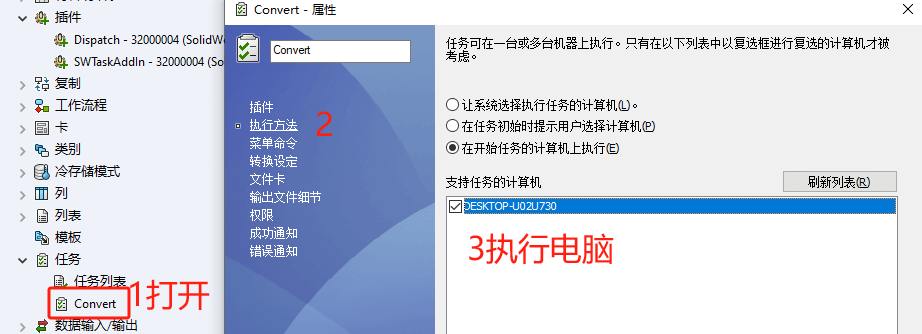
在客户端里的命令设置可以从【任务-菜单命令】里设置。命令按钮会在客户端的菜单里显示。
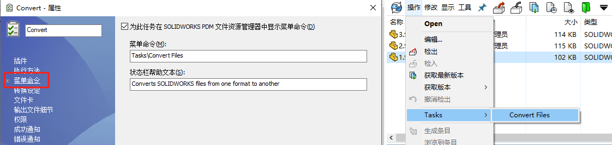
任务列表
您可以赋予用户或组【管理权限-可查看任务列表】，使用任务列表对话框查看或操作任务状态。
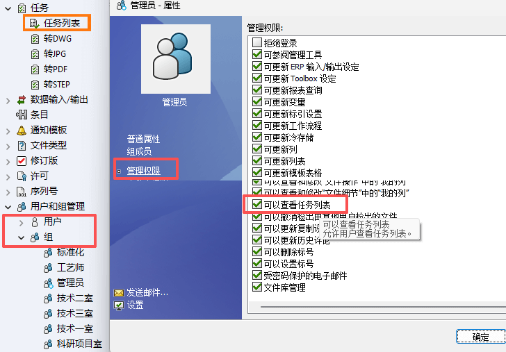
查看任务状态、手动启动任务、查看已完成任务的详细信息，以及设置时间间隔以刷新未决任务列表。 也可以暂停和恢复任务。
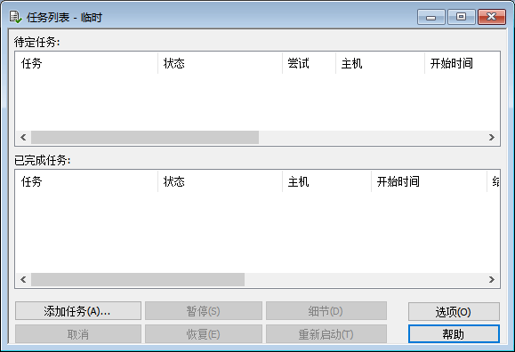
为确保插件（如 SOLIDWORKS Task 插件）的最新版本正在运行，您必须手动升级插件。
将文件保管库升级到新的 Service Pack 或版本时，现有的 加载项不会自动更新。这是为了防止 覆盖自定义项的加载项。
例如，您可能已自定义由 SOLIDWORKS 任务插件。您可以继续使用自定义任务，而不升级。 但是，您将无法使用新的任务功能，并且可能会遇到问题 启动任务并处理升级的 SOLIDWORKS 文件。
自 升级 这 任务 手动地 复制 .cex 文件 那 包含 SWTaskAdd-in、 转换 设计检查器和打印 任务。 这 位置 之 .cex 文件取决于 安装 之 客户端。如果安装客户端 通过 在 InstallShield 向导中，将 .cex 文件复制到 C：\Program Files\SOLIDWORKS PDM\Default Data\ 文件夹。 如果安装 客户 通过 SOLIDWORKS 安装管理程序，将 .cex 文件复制到 C：\Program Files\SOLIDWORKS Corp\Default Data\ 文件夹。您导入 这些文件中的一个或多个，用于更新 SWTaskAdd-in 及其任务 支持。
内容
确定 SOLIDWORKS PDM 和 SOLIDWORKS Task 插件的当前版本
为确保您拥有 SOLIDWORKS Task 插件的最新更新，SOLIDWORKS PDM Professional 版本和 SWTaskAddin 版本应相同。
执行 SWTaskAddin 升级（仅限 SOLIDWORKS PDM Professional）
如果 SWTaskAddin 的版本低于 SOLIDWORKS PDM Professional 的版本，您可以通过导入 .cex 文件来升级 SWTaskAddin。
-
升级 SWTaskAddin 后，可以导入最新版本的“转换”、“打印”和“设计检查器”任务。
Dispatch
企业版本PDM Dispatch是集成在PDM库内并且可以触发多种事件的插件工具，例如在文档达到某种工作流程状态时即触发该操作。
加载插件
方法1
C:\Program Files\SOLIDWORKS PDM\Default Data
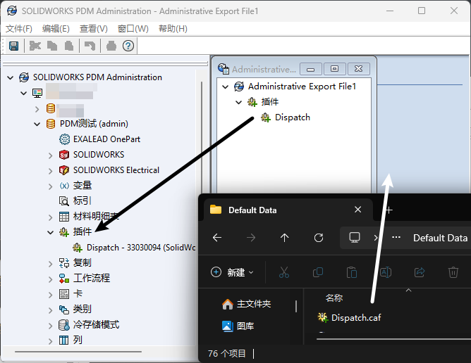
方法2
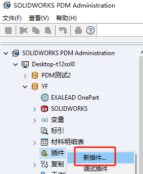
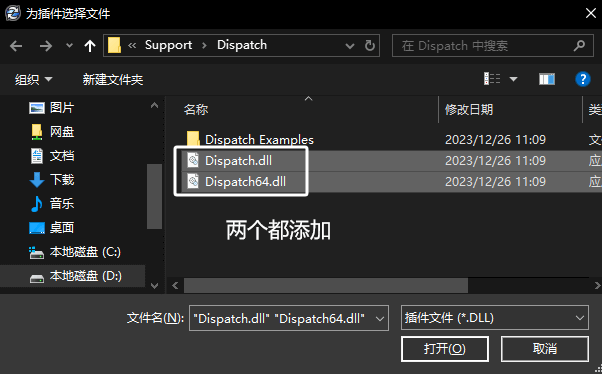
1 | ..\SOLIDWORKS安装包\SWPDMClient\Support\Dispatch |
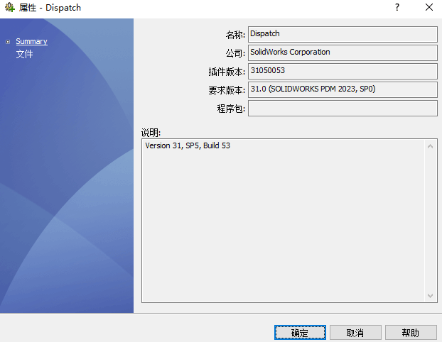
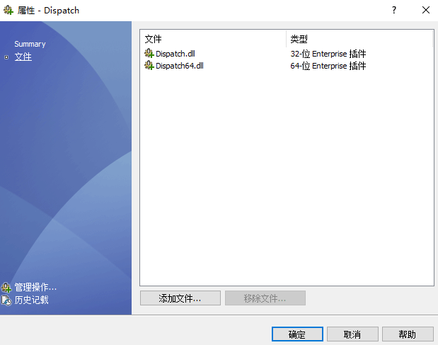
管理操作
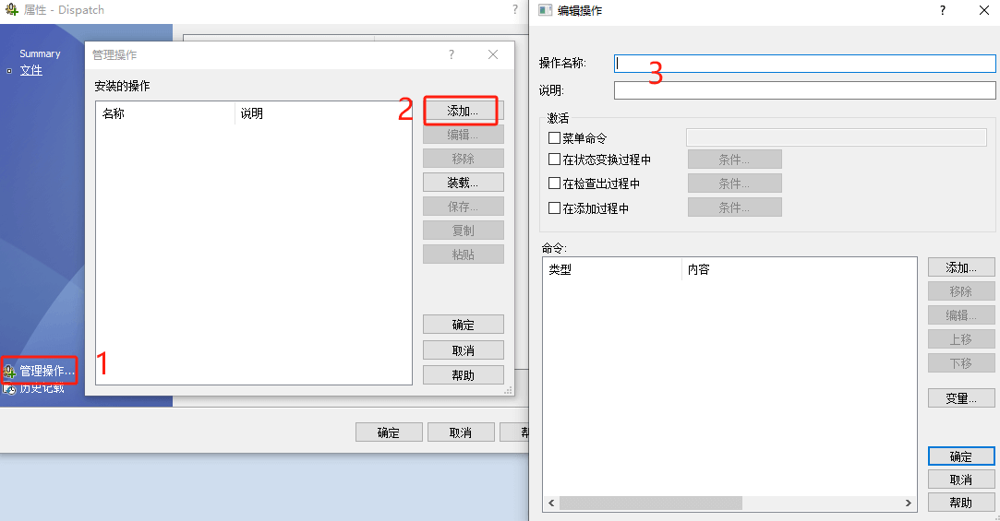
触发条件：
有如下4种启动程序的场景：操作菜单、状态变更、检出、检入；
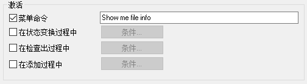
命令内容：
| 类型 | 内容 | 说明 |
|---|---|---|
| 对于所有文档 | 块启动 | |
| 确定信息框 | ||
| 所有文档结尾 | 块结束 |
程序例子：
dispatch程序一般以“程序.acn”的形式。
检入检出
将文件检入或检出PDM库
更改文件变量必须做什么？检出文件
更改变量值（非自由版本变量）
必须精确写入实际名称和路径进行操作
复制文件
复制PDM库内外的文件
复制只抓取缓存版本，而不是最新版本
没有移动文件!
复制本地缓存版本，不是最新的
生成文件夹
在PDM内部或外部创建文件夹
1 | 生成文件夹 |
注意：
1、需要逐级创建
2、如果文件夹存在则会跳过
删除文件
只删除文件的缓存版本
可勾选“同时将文件从库中移除”删除(权限?)
获取文件
如果文件不存在，则创建文件的本地缓存副本
也可以在系统中获得最新版本的文件缓存
标号/转移
基于If语句创建跳转
非常有用
移动文件夹
将本地文件夹从一个位置移动到另一个位置（非PDM库内文件路径）
不能移动PDM库内文件夹!
生成参数文件
生成包含所选文件信息的文本文件
需要一个模板，例如txt
发送信息
向选定的用户或组发送邮件消息
使用建立的任何邮件系统发送
将邮件消息发送到选定的用户或组，使用已建立的邮件系统发送
设定变量
设置文件或文件夹数据卡的变量
可以配置特定的SW配置页签文件
1 |
外壳执行
启动命令行，exe程序执行获取参数值的好方法
等候
根据所选动作暂停脚本执行
文件删除
文件生成
注册表值已设定
读写注册表
小心使用!! 防止写错位置
写入运行脚本的机器的本地注册表
不限制写入哪些注册表值
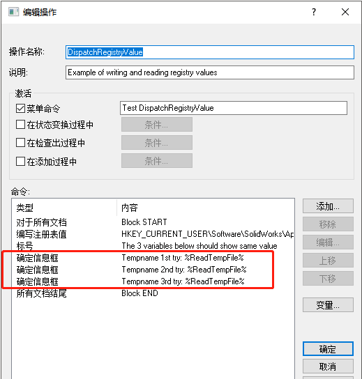
使用：
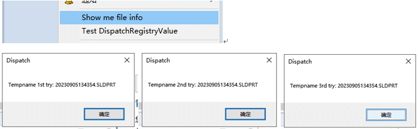
编辑框/组合框
非常实用的输入变量值更新缺失的信息和初始化
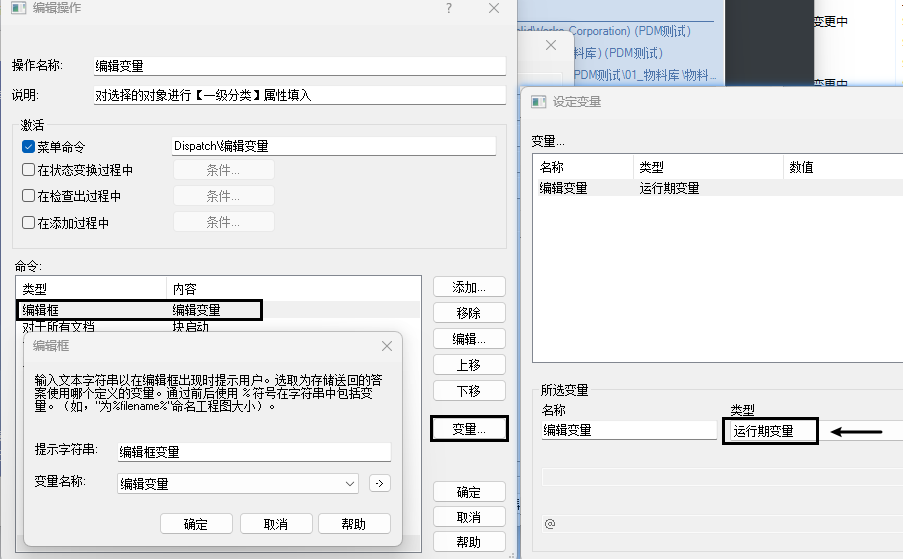
是否信息框
根据所选值决定执行跳转路径
函数使用介绍
针对静态字符串自动抓取关键字字符
帮助文档
详细可查看PDM帮助，提供详细的命令说明
样例讲解
样例1：获取文件名后缀与不带后缀文件名
样例2：同步零件属性到工程图
样例3：使用零件信息重命名工程图
样例4：通过注册表批量提示所有报错文件信息